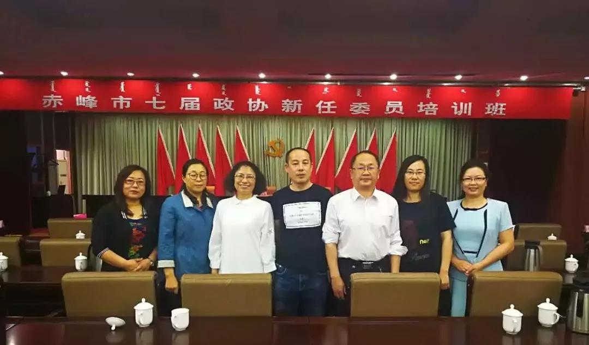

5月24日——25日，政协赤峰市第七届委员会新任委员培训班在赤峰市委党校开班，农工党市委会8名新任委员参加培训。
开班式上市政协主席邹德华讲话，希望，新任政协委员要认真学习贯彻习近平新时代中国特色社会主义思想和中共十九大会议精神，深刻领会把握中央精神、深入认识了解政协和政协工作，尽快进入角色，更好履行职责，为党和国家事业、为人民政协事业作出积极的贡献。
市政府副市长生效友结合我市实际情况做了专题讲座。党校副教授李向林对《习近平总书记参加十三届全国人大一次会议内蒙古代表团审议时重要讲话》进行政治解读。政协信息委主任和提案委副主任分别就如何撰写社情民意信息和发挥提案作用，履行好政协职能的问题进行生动贴切、深入浅出的讲解。

参训人员表示，通过培训，进一步明晰了内蒙古及我市当前政治任务，经济发展状况、存在问题及努力方向，明确了作为一名新任政协委员所必须肩负的政治责任和历史使命，学到了如何更好撰写提案、社情民意信息的切入点和方法。将以此次培训为契机，深入实际开展调研，撰写高水平提案和社情民意信息，为领导科学决策提高依据，履行好参政议政职能。
在两天的培训过程中，8名新任党员克服工作忙、时间紧等一切困难，认真参加培训，表现出极高的学习热情，圆满完成了培训内容，提高了政治站位、提升了政治素养、增强了参政水平。